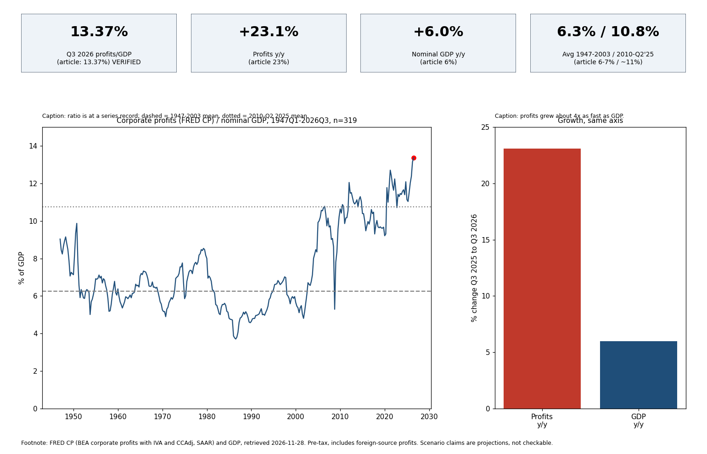

The core statistics are accurate. BEA/FRED data give corporate profits (with IVA and CCAdj) of $4,419.0B and nominal GDP of $33,056.2B in Q3 2026, a ratio of 13.37%, the highest in the series since 1947 (Q2 2026: 13.14%). Profits rose 23.1% from Q3 2025 ($3,590.3B) and GDP 6.0%. Rating: 1 Pinocchio (minor issues).
| Claim | Finding |
|---|---|
| 13.37% in Q3 2026, 13.14% in Q2 | Verified (FRED CP/GDP) |
| Profits $3.59T to $4.42T (+23%) | Verified: 3,590.3 to 4,419.0 |
| GDP +6% | Verified: 31,180.5 to 33,056.2 = +6.0% |
| 1945-2003 avg 6-7%; 2010-mid-2025 about 11% | Verified approx (6.26%; 10.76%; series starts 1947) |
| 25% rise gives 15.7%; 11% gives $3.9T, 12% lower | Arithmetic consistent; projection |
| Zandi and Friedman quotes | Not found; not checkable here |
Confidence: high on the data, low on the quotes. Q3 2026 figures are a preliminary estimate and subject to revision (third estimate due 2026-12-23 per BEA schedule).